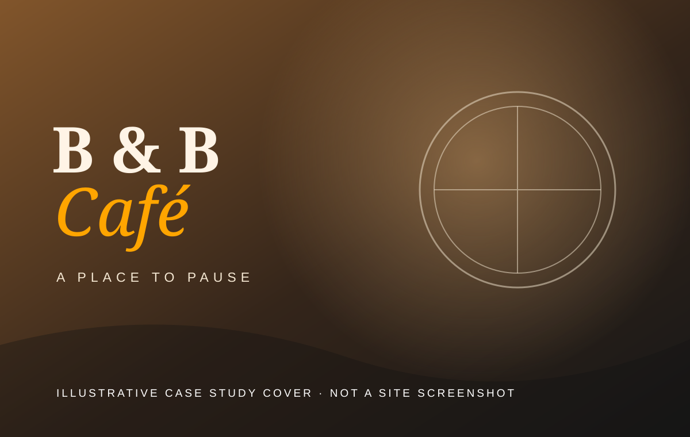
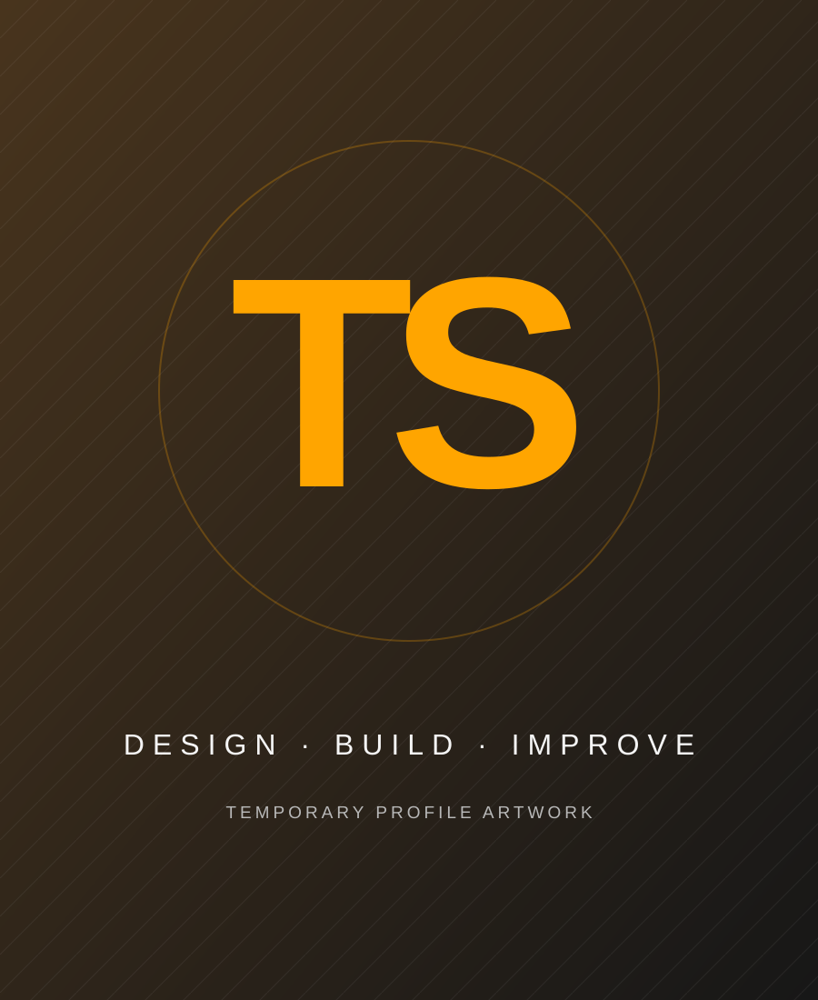
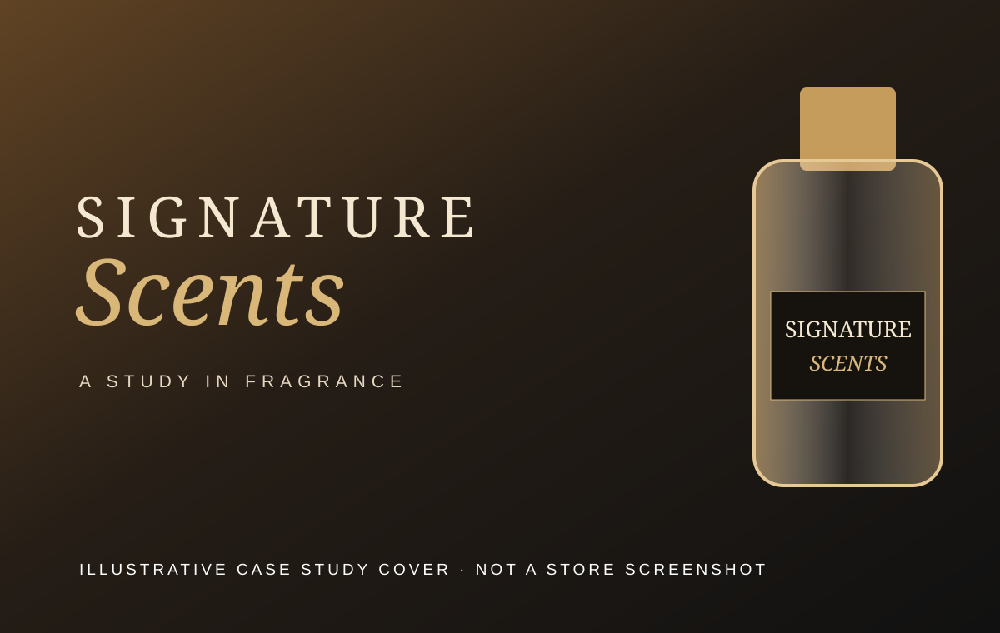
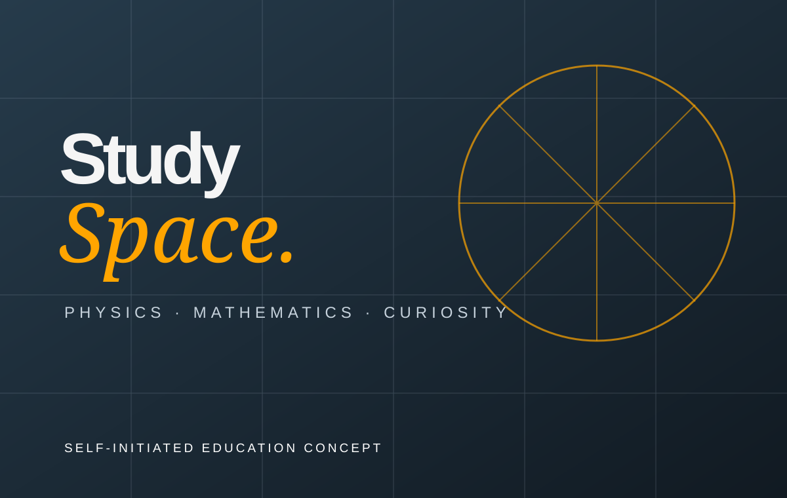

↗CONCEPT COVER · CASE STUDY 0101 / HOSPITALITY
↗B & B Café
A responsive café website focused on making the menu easy to explore and helping customers take the next step toward ordering.
Read the case study ↗Visit live website ↗AVAILABLE FOR SELECT PROJECTS · WORKING WORLDWIDE
I'm Taban — a web developer helping businesses turn ideas into clear, useful and memorable digital experiences.

PROFILE VISUAL · REPLACE WITH A REAL PHOTOI’m a web development graduate from Elevate Academy with a passion for crafting seamless digital experiences for businesses around the world.
I bring together thoughtful design, practical development and a focus on the people using the finished product. My background also includes a Bachelor’s degree in Science with Education and experience teaching Physics and Mathematics — work that strengthened my ability to explain complex ideas clearly and approach problems methodically.
Request my CV ↗A selection of web experiences built for real-world needs. Explore the live projects to see the work in context.

↗CONCEPT COVER · CASE STUDY 01A responsive café website focused on making the menu easy to explore and helping customers take the next step toward ordering.
Read the case study ↗Visit live website ↗
↗CONCEPT COVER · CASE STUDY 02A perfume and cologne e-commerce experience designed around product discovery, visual presentation and a clear path to purchase.
Read the case study ↗Visit live website ↗
↗SELF-INITIATED CONCEPTA self-initiated concept for a clear, responsive learning hub that helps students find Physics and Mathematics study resources.
Explore the concept ↗Have a project in mind? Let's make it happen ↗
Practical web solutions shaped around your goals, your customers and the way your business works.
Purpose-built pages for businesses, campaigns and personal brands — designed to communicate clearly and guide visitors toward action.
Online storefronts that help customers explore products and move through a clear shopping experience.
Responsive, accessible interfaces built with clean HTML, CSS and JavaScript, with attention to detail and usability.
Refresh an outdated website, improve its mobile experience or make existing pages easier to use and maintain.
Good work comes from good collaboration. Here's how we'll move from an idea to a finished website.
We discuss your goals, audience, content and what success should look like.
I shape the structure and visual direction around the needs of your project.
I develop the site, check it across devices and refine the details with your feedback.
We prepare the site for launch and agree on any handover or ongoing support needed.
Tell me a little about what you're building. I'd love to hear about it and explore how I can help.